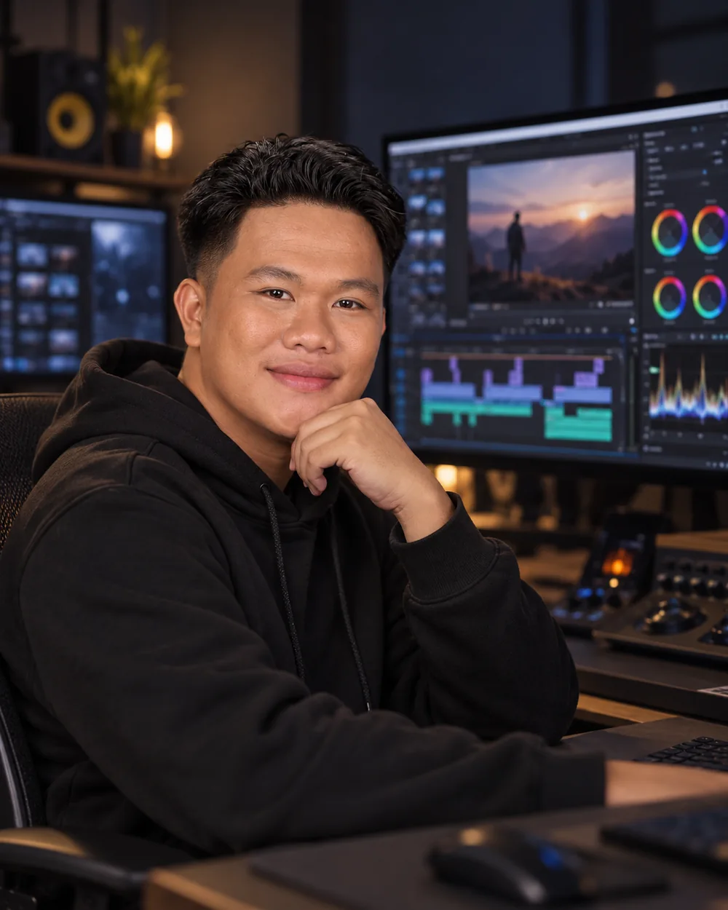

AI VIDEO
CREATION
Concept-to-frame AI visuals, shot planning, reference-driven consistency, and cinematic image-to-video direction.
AI FILMMAKER / VIDEO EDITOR / PHILIPPINES
I combine cinematic storytelling, AI-generated visuals and precise editing to create videos that don't just look good — they make you feel something.
Different formats. One obsession: making every second count.
A space for cinematic stories, commercial cuts, AI visuals, and the moments in between.
TOOLS ARE EVOLVING. TASTE IS EVERYTHING.
CREATIVE HUMAN DIRECTION × GENERATIVE POSSIBILITYFrom the first frame imagined to the final export delivered.
Concept-to-frame AI visuals, shot planning, reference-driven consistency, and cinematic image-to-video direction.
Story-first assembly, pacing, emotional timing, transitions, color treatment, and polished final cuts.
Product promos and social-first edits designed around scroll-stopping hooks, clear payoffs, and memorable rhythm.
A structured workflow built around story, not random effects.

I shape the message, pacing, emotion, and references before opening the timeline. The story sets the direction.
The smallest decisions change the mood: a shadow, a color shift, a half-second pause. Try this interactive color-look demonstration to see how grading can steer the atmosphere.
Hey, I'm YOUR NAME — an AI video creator and editor who believes the best videos make the technical feel effortless.
My approach blends cinematic language with modern generative tools. I obsess over expression, movement, continuity, sound, and timing so that the final result feels like a real scene — not just a sequence of pretty clips.
Need an AI-powered cinematic scene, a better edit, or an ad that actually lands? Tell me what you're making.
Based in the Philippines · Collaborating worldwide
The form opens your email app. There is no database or server.